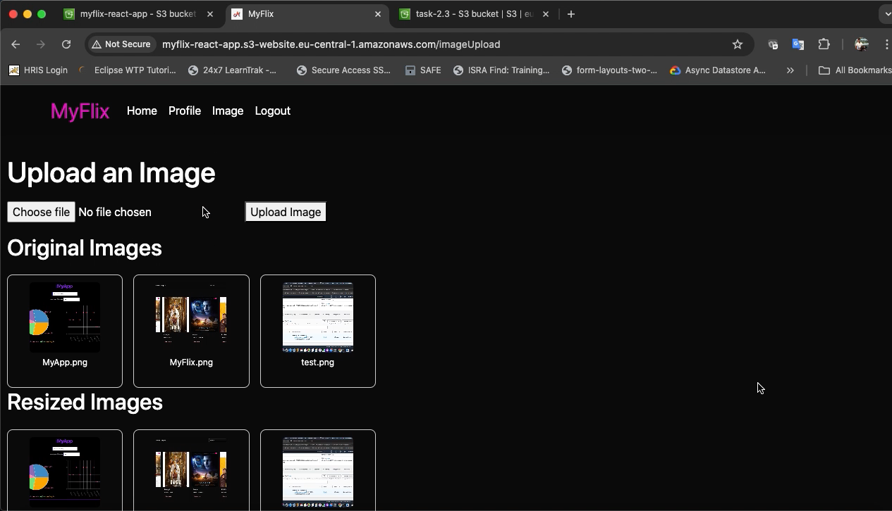
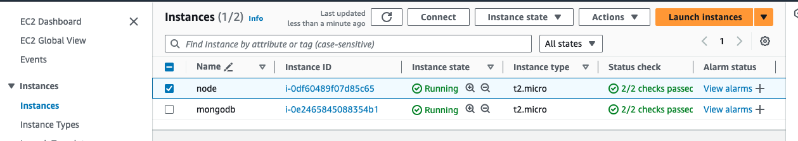
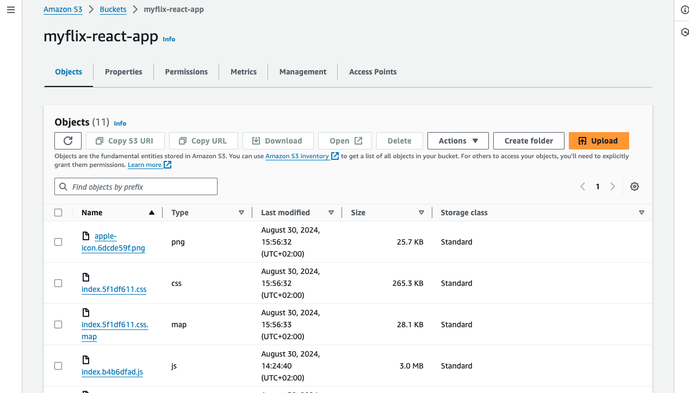
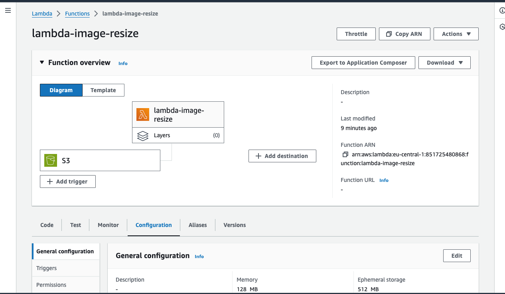

Overview
This case study outlines the process of deploying a three-tier web application—MyFlix—on Amazon Web Services (AWS). The application consists of:
Purpose and Context
The purpose of this project is to deploy the MyFlix web application on Amazon Web Services (AWS), following cloud-native principles for scalability, reliability, and efficiency. The application consists of a Node.js/Express API, a MongoDB database, and a React frontend, all integrated into AWS services. The backend runs on EC2 instances, the frontend is hosted on S3 as a static website, and AWS Lambda functions process images uploaded to S3. By leveraging AWS's managed services, the project ensures fast, global access, automatic scaling, and minimal infrastructure management, while providing an optimized user experience and aligning with modern DevOps practices.

Duration
The project was completed in 7 weeks, from the initial design phase to the final deployment.
Deadlines
Milestones included completing the deployment of the back-end API on EC2, hosting the front-end on S3, integrating AWS Lambda for image processing and conducting performance and user testing.
Tools and Technologies
- Amazon EC2 (Elastic Compute Cloud)
- Amazon S3 (Simple Storage Service)
- AWS Lambda
- AWS SDK (Software Development Kit)
- Amazon IAM (Identity and Access Management)
- Amazon CloudWatch


Deployment Process
The deployment of the MyFlix web application on AWS begins with setting up necessary AWS resources, such as IAM roles, EC2 instances, and an S3 bucket for hosting the React frontend. The backend, a Node.js/Express API, is deployed on the EC2 instance, connecting to a MongoDB database. The React app is built and uploaded to S3, enabling static website hosting. For image upload and processing, an S3 bucket and Lambda function are set up to handle automatic image resizing. The frontend and backend are integrated using the AWS SDK, and CloudFront is configured for global content delivery. Route is used to manage the domain and direct traffic to the appropriate resources. After deploying, the application is tested for functionality, and CloudWatch is set up to monitor performance. Finally, auto-scaling is enabled for the EC2 instances to ensure the application can handle increased traffic.

Final product
Here is the final product of the MyFlix app, presented in a video format showcasing various page views, including the deployment of the app on AWS.
Challenges and Solutions
- One of the main challenges I encountered during the deployment process was configuring the Application Load Balancer (ALB). Initially, I faced difficulties in properly setting up the ALB to route traffic effectively between multiple EC2 instances. After researching online and consulting with my mentor, I was able to understand the proper configuration steps, such as setting up target groups, defining listener rules and ensuring security groups allowed proper traffic flow. With this guidance, I successfully configured the ALB, enabling it to efficiently distribute traffic across my backend instances, improving the app's scalability.
Retrospective
The deployment of the MyFlix app went smoothly, with successful setup of EC2, S3, Lambda and CloudFront for optimal performance. The integration of AWS services ensured scalability, ease of management and efficient image processing.
One area for improvement would be better documentation of the deployment process to streamline future updates and troubleshooting. Additionally, automating more parts of the workflow, such as infrastructure provisioning with CloudFormation or Terraform, could further reduce manual effort and improve efficiency during deployment and scaling.
I learned the importance of thorough planning and understanding AWS services before starting the deployment process. The integration of multiple services like EC2, S3, Lambda and CloudFront requires careful configuration to ensure smooth communication between components. I also realized the value of seeking help from mentors and leveraging online resources when faced with challenges, as it helped me overcome roadblocks quickly. Additionally, automating infrastructure setup and having proper monitoring in place are crucial for long-term scalability and performance.
Throughout this project, I developed strong skills in cloud infrastructure management, particularly with AWS services such as EC2, S3, Lambda and CloudFront. I gained hands-on experience in deploying full-stack applications and integrating serverless functions for efficient image processing. Moving forward, I aim to further enhance my expertise in Infrastructure-as-Code using CloudFormation or Terraform and explore advanced AWS services like AWS RDS for database management and Elastic Beanstalk for simplified application deployment. My future goal is to gain proficiency in building fully automated, scalable cloud-native applications with continuous integration and continuous deployment (CI/CD) pipelines.
Final Thoughts
Deploying the MyFlix app on AWS was a valuable learning experience that deepened my understanding of cloud computing and infrastructure management. While there were challenges along the way, especially with configuring the Application Load Balancer, overcoming them enhanced my problem-solving skills. The project not only strengthened my technical abilities in deploying full-stack applications but also highlighted the importance of leveraging cloud services to ensure scalability, reliability and efficiency. Moving forward, I’m excited to apply what I’ve learned to more complex projects and continue growing my cloud expertise.